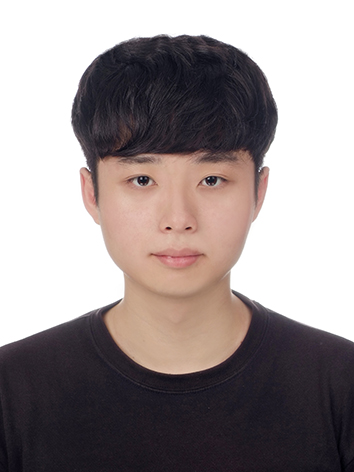

Joo Chan Lee
Ph.D. Student
Department of Artificial Intelligence
Sungkyunkwan University
maincold2 at skku.edu
[GitHub]
[Google Scholar]
Publications
Masked Wavelet Representation for Compact Neural Radiance Fields
ArXiv
Daniel Rho*, Byeonghyeon Lee*, Seungtae Nam,
Joo Chan Lee
, Jong Hwan Ko, Eunbyung Park
[Project page]
[Paper]
[Code]
FFNeRV: Flow-Guided Frame-Wise Neural Representations for Videos
ArXiv
Joo Chan Lee
, Daniel Rho, Jong Hwan Ko, Eunbyung Park
[Project page]
[Paper]
[Code]
A Reconfigurable Neural Architecture for Edge–Cloud Collaborative Real-Time Object Detection
IEEE Internet of Things Journal (2022)
Joo Chan Lee
, Yongwoo Kim, SungTae Moon, Jong Hwan Ko
[Paper]
Scalable Color Quantization for Task-Centric Image Compression
ACM TOMM (2022)
Jae Hyun Park, Sang Hoon Kim,
Joo Chan Lee
, Jong Hwan Ko
[Paper]
A Splittable DNN-Based Object Detector for Edge-Cloud Collaborative Real-Time Video Inference
AVSS 2021
Joo Chan Lee
, Yongwoo Kim, SungTae Moon, Jong Hwan Ko
[Paper]
Robust detection of small and dense objects in images from autonomous aerial vehicles
EL (2021)
Joo Chan Lee
, JeongYeop Yoo, Yongwoo Kim, SungTae Moon, Jong Hwan Ko
[Paper]
VisDrone-DET2020: The Vision Meets Drone Object Detection in Image Challenge Results
ECCV 2020 Workshops (VisDrone Challenge 1st Place Winner)
...,
Joo Chan Lee
, ...
[Paper]
[Certificate]
![[Certificate]](http://iris.skku.edu/img/2020-task1_first.png){kind=link}